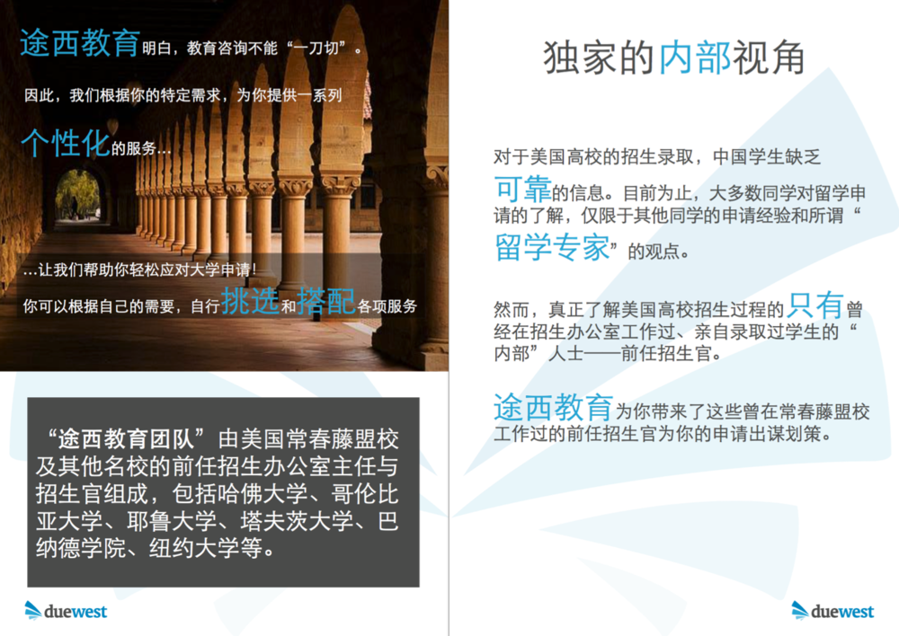
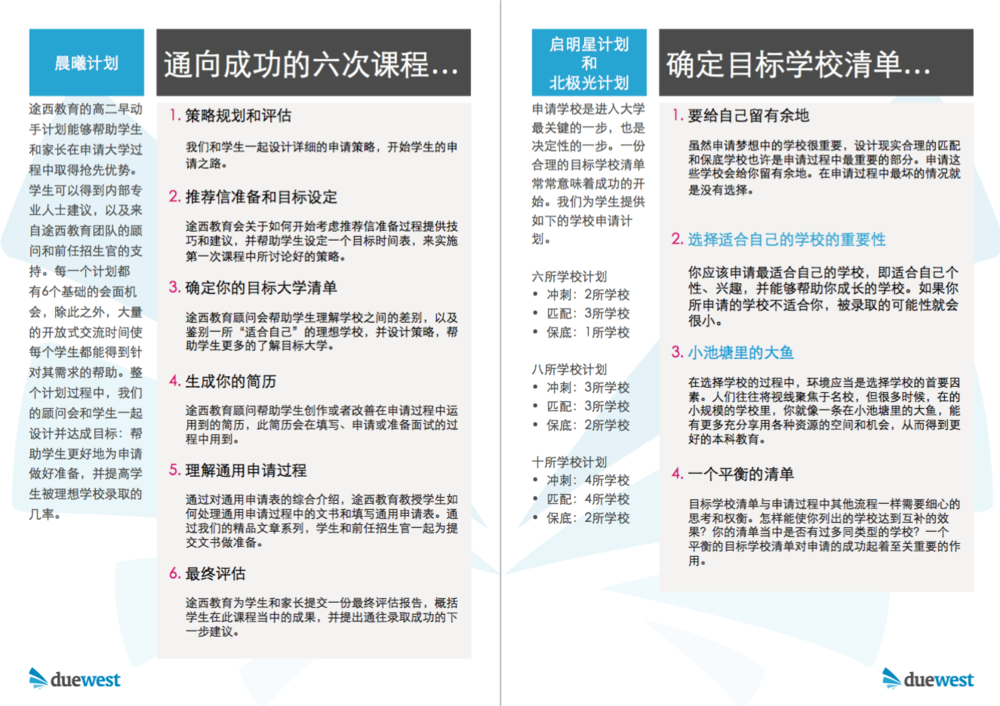
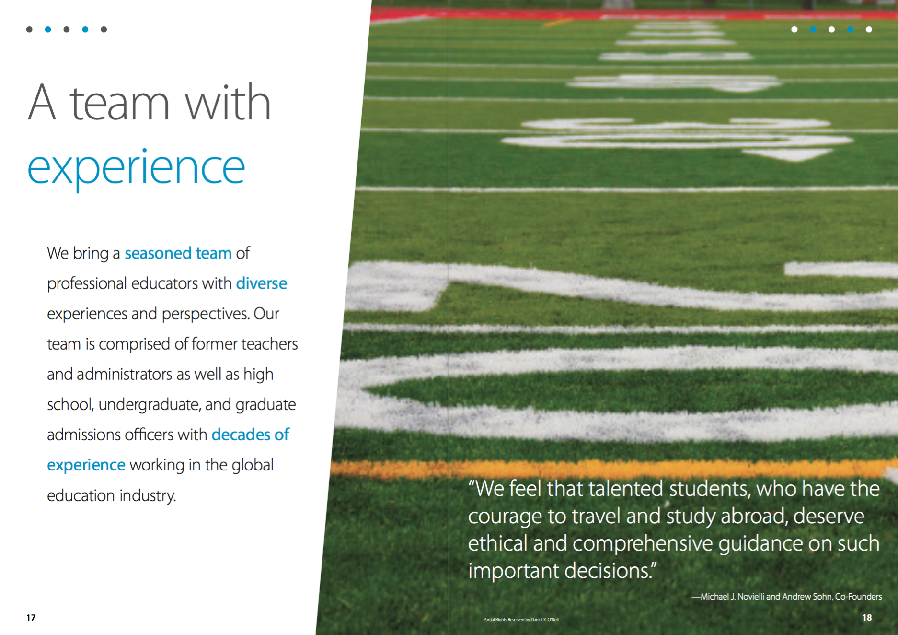
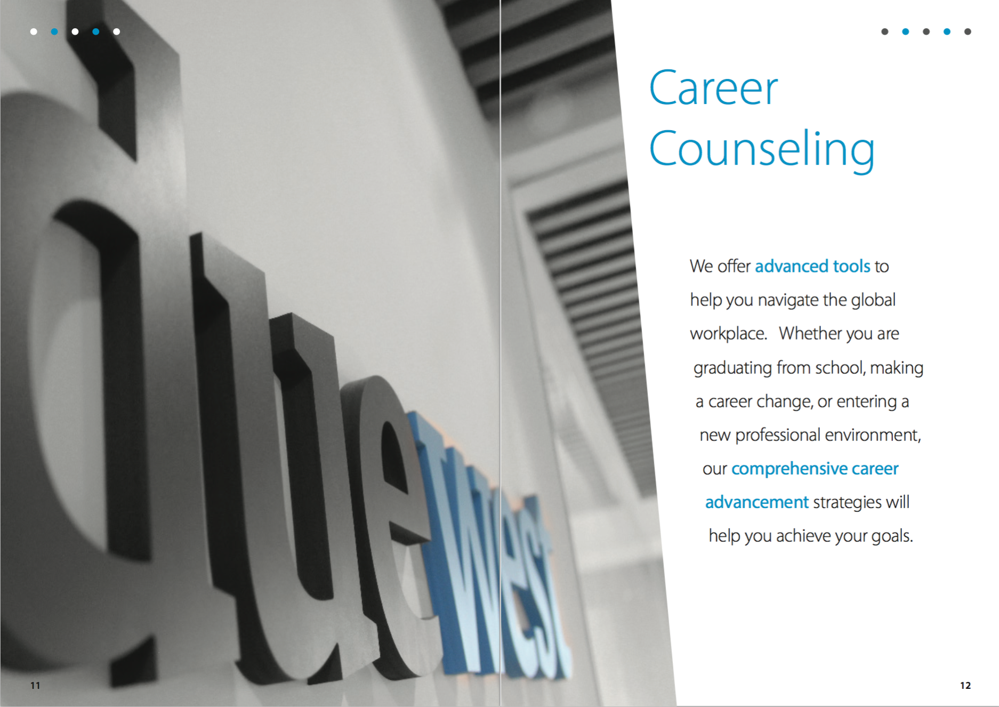
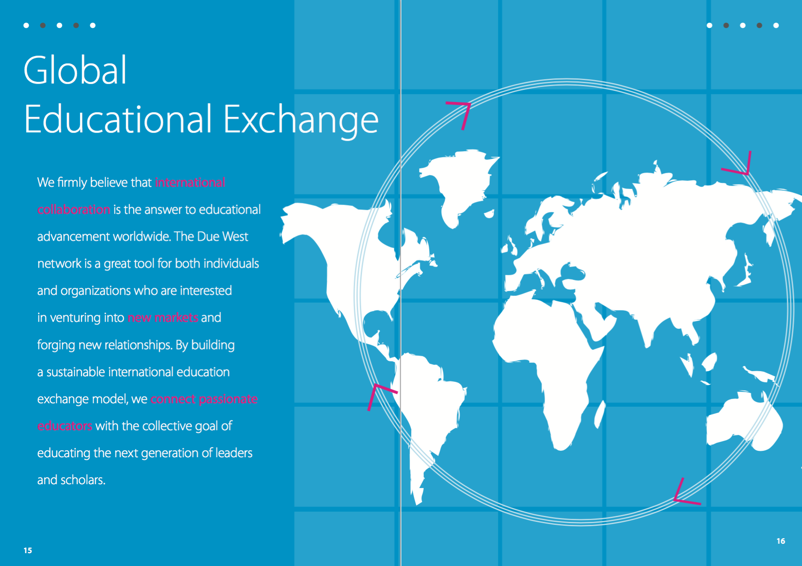

DUE WEST EDUCATION
MARKETING AND BRANDING DESIGN
Due West is a Chinese education company that provides guidance and counseling for Chinese students who want to study in the US. I was hired to create new branding and marketing materials. Over the course of two months I designed a series of print and digital marketing materials, including brochures, posters, presentation templates, PDFs, and videos.
UNDERSTANDING THE COMPANY
Due West was a small education company whose elite services were tailored to high end clients. The education consulting industry in China is saturated with firms; Due West wanted to distinguish itself as the elite service in the industry. The most important themes to communicate were reliability, eliteness, and trustworthiness. The most widely used marketing material was the brochure.
EXISTING DESIGN

The old brochure design had been in use for the past few months, but employees at the company found the brochure to be limited.
I conducted a series of brochure user interviews, and also observed how the brochure was used in everyday settings. There appeared to be two main situations where the brochure was used.
Situation 1: Meetings
A client typically walks into the office, is offered tea, and then introduced to a Due West consultant. The client and consultant enter a meeting room with a large wooden table, sitting facing each other.
Throughout the meeting, the consultant seeks to gauge the client’s child’s situation, as well as the client’s understanding of the US College Admissions process. Then, the consultant will pull out a brochure, and flip to the relevant pages that outline their services, and use that as a tool to structure discussion. The client is offered the brochure for further perusal as he/she leaves.
Observing these meetings and talking with Due West consultants, I summarized:
- The brochure was very long, and the Due West consultant had to flip to find the individual page when introducing a specific service
- The brochure’s design was such that it could not lie flat on the table, and had to be held flat with one hand
- Design was extremely text heavy, and did not always flow well with the meeting
- The client was not able to read the large amount of text while listening to what the consultant was saying
- The brochure did not present the spread of Due West’s services in an immediately clear way
Situation 2: Direct-to-Client Clients were often given these brochures after events or after meetings. As it was not appropriate to directly interview Due West clients about the brochure, I decided to interview a similar sample: parents of students at my own high school. These parents' children were also applying to college, were of a similar socioeconomic class, and had similar goals as Due West clients. I presented the brochure to parents at my high school, observed their behavior, and found that:
- Parents did not think the brochure looked very professional (rated an average of 2.2/5.0)
- There was too much information, and few parents read the brochure for more than a few minutes (avg. of 2 mins)
- Parents often wanted to directly find the "college consulting" section, suggesting that they were less interested in other sections (such as "boarding school" or "transfers")
THE REDESIGN
The new physical design addressed the problem of physical inconvenience by moving most of the content into inserts rather than the brochure, which enabled a two staples to bind the brochure. The main brochure contained general information about the company, while individual inserts, held in a fold on the inner back cover of the brochure, provided specific information about each service. Individual inserts also made clients feel like their unique needs were being tailored to. Cognitive overload from too much text was addressed by simplifying language and adding graphics/flow charts. Some products and concepts were best communicated through diagrams rather than text.

